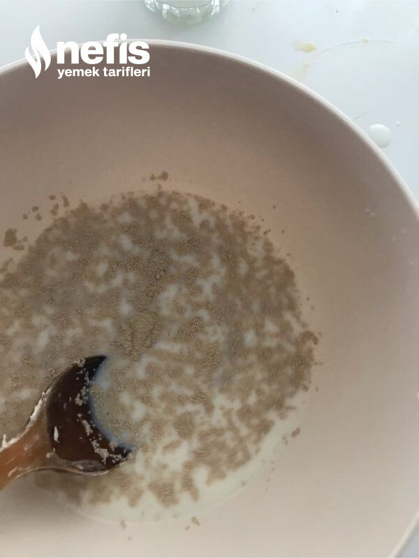

🍽️ 4-6 kişilik⏱️ Hazırlık: 20 dk🔥 Pişirme: 25 dk🏷️ Hamur İşi Tarifleri🏷️ Çörek Tarifleri
Malzemeler
- 1 ,5 su bardağı ılık süt (300 mg)
- 1 paket maya
- 1 yemek kaşığı şeker
- Yarım tatlı kaşığı tuz
- 6-7 yemek kaşığı sıvı yağ
- Alabildiği kadar un
- 300-350 gram kaşar peyniri
- Susam
Hazırlanışı
- Ilık süt ve mayayı karıştırıyoruz. Sıvı yağ, tuz ve şekeri de ilave ediyoruz.
- Unu ilave ederek yumuşak bir hamur elde ediyoruz, 1 saat mayalamaya bırakıyoruz.
- Kabaran hamurun havasını alıp oklava yardımıyla yarım cm kalınlığında açıyoruz.
- 5-6 cm kareler şeklinde hamuru kesiyoruz.
- Küçük küpler şeklinde kestiğimiz kaşarları her karenin içine koyarak yuvarlıyoruz.
- Yağlanmış fırın kabına diziyoruz (ben birbirine yapışmasın diye iki tepsiye dizdim)
- 15 dakika kadar mayalanmasını bekliyoruz.
- Üzerini fırça yardımıyla sıvı yağ ile hafif yağlıyoruz.
- İstenirse üzerine susam serpiyoruz.
- 180 derece ısıtılmış fırında üzeri kızarana kadar pişiriyoruz.